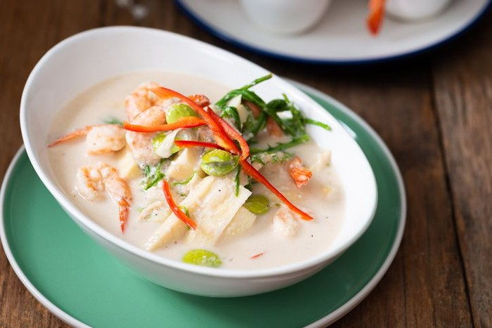
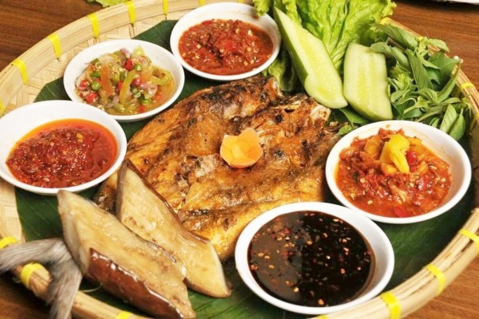
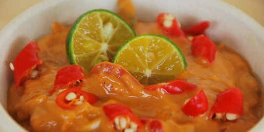

|
 Gabing menjadi makanan khas Lampung selanjutnya yang dibuat dari batang kelapa muda. Batang kelapa muda tersebut diiris hingga terlihat lempengan kecil memanjang, lalu direbus dan diberikan tambahan bumbu rempah khas. |
 Seruit merupakan hidangan kuliner pertama yang kerap disajikan tatkala ada acara keluarga, pernikahan, acara adat, hingga keagamaan. Makanan ini terbuat dari ikan bakar yang dicampur dengan berbagai sambal terasi khas Bandar Lampung, berupa tempoyak serta mangga. |
 Makanan yang menggunakan bahan dasar buah durian yang difermentasikan ini memang terbilang unik. Siapa sangka, banyak orang tergila gila dengan cita rasa makanan khas Lampung ini yang sama sekali tidak membosankan. Tidak sedikit pula merasa ketagihan dan ingin kembali mencicipi tempoyang. |
Oke, jadi itu adalah 3 jenis makanan khas dari Lampung. Sebenarnya ada banyak sekali makanan khas Lampung. Tetapi Admin hanya mencantumkan tiga saja. Jika teman-teman memiliki informasi tentang jenis makanan lainnya silahkan daftarkan di bawah ini ya: